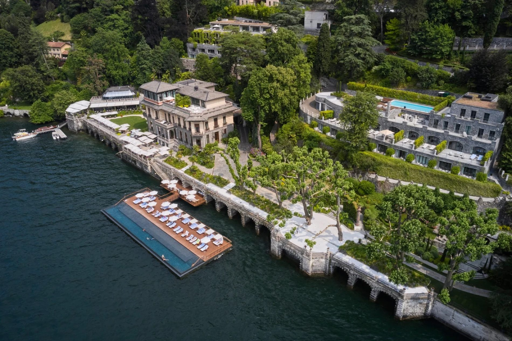

An infinity pool floating at the water's edge, framed by the Alps — the family-friendly way to do Como.
The Mandarin earns its place on my site three times over. Its famous floating pool — an infinity pool floating at the water's edge, framed by the Alps — is #09 in my worldwide hotel pools ranking. My featured Italy page calls it a resort-scale garden estate with private villas, and the family-friendly way to do Como. And it holds the "Classic Grandeur" seat in my Lake Como proposal.
Set in a beautifully restored villa in Blevio with gardens terracing down to the lake, it pairs a storybook setting with the polished, anticipatory service the brand is known for. Among Como's great addresses, it's the one with genuine resort scale — grounds, villas, and facilities that give families and longer stays room to breathe.
My take from the proposal: a property I've long wanted to book for the right clients. Base rooms are scarce, so the Junior Suite is the natural entry point — and the Duplex Suite upgrade, roughly double the size, is well worth considering if you'd like more room to spread out.

The floating pool. The lake's famous pool, floating at the water's edge and framed by the Alps — #09 on my worldwide list.
Resort scale on a lake of villas. Terraced gardens, private villas, and real facilities — the family-friendly way to do Como, as my featured page puts it.
Mandarin Oriental service. Storybook setting, polished and anticipatory execution — the brand's signature, transplanted to Blevio.
Base rooms are scarce. The Junior Suite — garden view, open-plan living — is the realistic entry point; the Duplex Suite upgrade roughly doubles the space. My Como proposal shows both.
Blevio is the quiet shore. A boat or car ride from Como town and Bellagio — seclusion is the feature; plan transfers accordingly.
Bringing kids to Como? This is my answer. The lake's intimate villas are built for couples — the Mandarin's scale is built for families.
The lake's famous floating pool, on the estate with room for everyone — when Como needs to work for the whole family, this is how.
Rates through me are identical to booking direct — the perks are not. As a Fora advisor, my clients receive a space-available upgrade, daily breakfast, and a hotel credit — plus my direct line to the team on property before and during your stay.
Check Availability